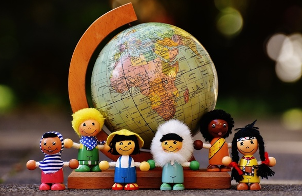

It was an easy decision to take but tough to make it happen. Facebook is addictive. A few years ago, I decided to stop posting stuff about my private life and to only post about topics that I found interesting. The second step was not to use the "like" button for any private related post such as my FB friends' new profile picture or FB friends' activity but only related to interesting idea that could improve the world such as stuff about veganism, climate change, feminism, and so on... The third step was to unfriend all the not-so-known FB friends. The last step was about to decide a specific date to delete my account, stick to it and to write a final post about saying bye bye and giving my email to those interested.
Here we are, I am out. And it feels great.
I was addict. Checking my account at least once a day. Checking notifications as soon as notifying them. Looking at photos of friends and friends of friends. In other words: wasting time.
Yes, I did follow several pages of my favorite people and associations but still, the ratio of relevant information compared to noise was quite low. When I read a book, there isn't any cat picture popping up, nor a link to a video about what Trump recently did. I stay focus and my attention doesn't get wasted.
I know we need breaks. But checking Facebook is not having a real break. I didn't feel refreshed after 5 minutes of scrolling down. I don't really know what the goal was, I guess I was trying not to get bored, or not to think at all. Sometimes satisfying a curiosity I had about this girl I met in college or what this guy became after so many years. Or I wanted to follow what my real friends recently did (instead of asking them) or follow what this association recently went through.
There are some advantages of using FB: you can easily invite many people to your party and stay in touch with people you would forget otherwise (I'm not sure this is really an advantage). But for what price?!
I won't talk much about FB privacy issue because it's everywhere on the cloud. But still, this should be your main motivation to get rid of FB: trust and privacy issues, continual changes in format, sponsored posts, increased advertisements, selling of your personal data and attention, etc... The list is quite long, for FB, *you are* the product. And indeed, just think about it for a minute. We are telling some random people (I'm not talking about your FB friends here) what we like or don't, who we like or don't, who we know, basically our complete social network. This is crappy. I bet you know that one: after a few likes, FB actually found out about your race, IQ, sexuality, substance use, personality and political views even if you had chosen not to reveal that information (source). As a good reminder, every information you give to the GAFAM and the 2 most famous operating systems are leaking information to the governments (Wikileaks). It is a -big- deal.
FB is also very tricky. You just agree with yourself for a 5 min check, but it turns into 30 min or more of new links, videos, and so on... Time is precious, there are so many greater things we could do!
All of these notifications checking, posts liking, comments answers, picture tagging, this is for sure a waste of time but even more sadly: another side effect is the demotivation on doing actual great things. Do you remember these time lying on your couch thinking about doing something real but... wait.. a last scroll, please.
Quite recently, some researchers have shown that the social network is one of the most important variables in measuring happiness. Thus I thought that having a big FB friends list would make me happier. And it did. For about a second. FB friends are NOT friends. I know it's obvious but it's always good to remember such fact: friends are people you talk to, you meet, you laugh with, you make fun of, you show your love to. I wasn't doing such thing with 95% of my FB friends.
What about all these people you know you won't have any news from anymore? You can still keep in touch on Signal (ethical version of Whatsapp) or email, or even better, write them a letter! Sure, I know, getting rid of your FB friends feels a bit like giving up a book you enjoyed. On the other hand, it frees your friendship shelf for new stories. Also, a few days after you delete your account, you won't care much anymore and you'll realize how unimportant these fake connections actually were. You will then start to focus on what really matters.

In sum, get your privacy back, get your time back, get your care about ethics and others back. Do something good for you and the next generation: don’t give up your freedom to short-term rewards.